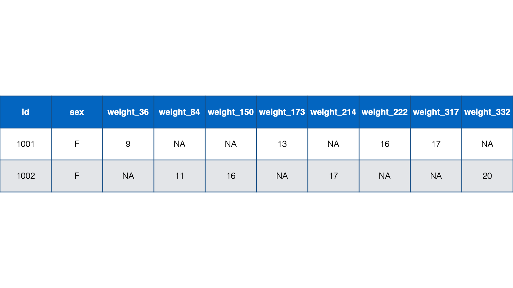

32 Restructuring Data frames
we’ve already seen data frames with a couple of different structures, but we haven’t explicitly discussed those structures yet. When we say structure, we basically mean the way the data is organized into columns and rows. Traditionally, data are described as being organized in one of two ways:
- With a person-level, or wide, structure. In person-level data, each person (observational unit) has one observation (row) and a separate column contains data for each measurement. For example:
- With a person-period, or long, structure. In the person-period data structure each person (observational unit) has multiple observations – one for each measurement occasion.
Note
Often, people are our observational unit in epidemiology. However, our observational units could also be schools, states, or air quality monitors. It’s the entity from which we are gathering data.
In some cases, only the person-level data structure will practically make sense. For example, the table below contains the sex, weight, length, head circumference, and abdominal circumference for eight newborn babies measured cross-sectionally (i.e., at one point in time) at birth.

In this table, each baby has one observation (row) and a separate column contains data for each measurement. Further, each measurement is only taken on one occasion. There really is no other structure that makes sense for this data.
For contrast, the next table below is also person-level data. It contains the weight in pounds for eight babies at ages 3 months, 6 months, 9 months, and 12 months.
Notice that each baby still has one, and only one, row. This time, however, there are only 2 measurements – sex and weight. Sex is measured on one occasion, but weight is measured on four occasions, and a new column is created in the data frame for each subsequent measure of weight. So, although each baby has a single row in the data, they really have four observations (i.e., measurement occasions). Notice that this is the first time that we’ve explicitly drawn a distinction between a row and an observation. Further, unlike the first table we saw, this table could actually be structured in a different way.
An alternative, and often preferable, data structure for data with repeated measures is the person-period, or long, data structure. Below, we look at the baby weights again. In the interest of saving space, we’re only looking at the first two babies from the previous table of data.
Notice that each baby in the person-period table has four rows – one for each weight measurement. Also notice that there is a new variable in the person-period data that explicitly records time (i.e., months).
Note
Let’s quickly learn a couple of new terms: time-varying and time-invariant variables. In the data above, sex is time invariant. It remains constant over all 4 measurement occasions for each baby. Not only that, but for all intents and purposes it isn’t really allowed to change. The weight variable, on the other hand, is time varying. The weight values change over time. And not only do they change, but the amount, rate, and/or shape of their change may be precisely what this researcher is interested in.
Below, we can compare the person-level version of the baby weight data to the person-period version of the baby weight data. we are only including babies 1001 and 1002 in the interest of saving space. As you can see, given the same data, the person-level structure is wider (i.e., more columns) than the person-period data and the person-period structure is longer (i.e., more rows) than the person-level data. That’s why the two structures are sometimes referred to as wide and long respectively.

Ok, so this data can be structured in either a person-level or a person-period format, but which structure should we use?
Well, in general, we are going to suggest that you use the person-period structure for the kind of longitudinal data we have above for the following reasons:
It contains an explicit time variable. The time information may be descriptively interesting on its own, or we may need to include it in our statistical models. In fact, many longitudinal analyses will require that our data have a person-period structure. For example, mixed models, gereralized estimating equations, and survival analysis.
The person-period structure can be more efficient when we the intervals between repeated measures vary across observational units. For example, in the data above the baby weight columns were named
weight_3,weight_6,weight_9, andweight_12, which indicated each baby’s weight at a 3-month, 6-month, 9-month, and 12-month checkup. However, what if the study needed a more precise measure of each baby’s age. Let’s say that we needed to record each baby’s weight at their precise age in days at each checkup. That might look something like the following if structured in a person-level format:

Notice all the missing data in this format – even with only two babies. For example, baby 1001 had her first check-up at 36 days old. She was 9 lbs. Baby 1002, however, didn’t have her first checkup until she was 84 days old. So, baby 1002 has a missing value for weight_36. That pattern continues throughout the data. Now, just try to imagine what this would look like for tens, hundreds, or thousands of babies. It would be a mess! By contrast, the person-period version of this data is much more efficient. In fact, it looks almost identical to the first person-period version of this data:
For essentially the same reasons already discussed above, the person-period format is better suited for handling time-varying predictors. In the baby weight data, the only predictor variable (other than time) was sex, which is time invariant. Regardless of which structure we use, sex only requires one column in the data frame because it never changes. However, imagine a scenario where we also collect height and information about diet at each visit. Using a person-level structure to store these variables would have the same limitations that we already discussed above (i.e., no explicit measure of time, incompatibility with many analysis techniques, and potentially inefficient storage).
Many of the “tidyverse” packages we use in this book (e.g.,
dplyrandggplot2) assume, or at least work best, with data organized in a person-period, or long, format.
So, does this mean that we should never organize our data frames in a person-level format? Of course not! There are going to be some occasions when there are advantages to organizing our data frames in a person-level format. For example:
Many people prefer the person-level format during the data entry process because it can require less typing. Thinking about our baby weight data above, we would only need to type one new value at each checkup (i.e., weight) if the data is organized in a person-level format. However, if the data is organized in a person-period format, we have to type three new values (i.e., id, sex, and weight). This limitation grows with the number of time-invariant variables in the data.
There are some analyses that will require that our data have a person-level structure. For example, the traditional ANOVA and MANOVA techniques assume the wide format.
There are times when our data is easier to manipulate when it is organized in a person-level format.
There are times when it’s advantageous to restructure statistical results from a longer format to a wider format to present them in the most effective way possible.
Luckily, we rarely have to choose one structure or the other in an absolute sense. The tidyr package generally makes it very easy for us to restructure (“reshape” is another commonly used term) our data frames from wide to long and back again. This allows us to organize our data in the manner that is best suited for the particular task at hand. Let’s go ahead and take a look at some examples.
32.1 The tidyr package
The tools we will use for restructuring our data will primarily come from a package we haven’t used before in this book – tidyr. If you haven’t already done so, and you’d like to follow along, please install and load tidyr, dplyr, and ggplot2 now.
32.2 Pivoting longer
In epidemiology, it’s common for data that we analyze to be measured on multiple occasions. It’s also common for repeated measures data to be entered into a spreadsheet or database in such a way that each new measure is a new column. We saw an example of this above:
we already concluded that this data has a person-level (wide) structure. As discussed above, many techniques that we may want to use to analyze this data will require us to restructure it to a person-period format. Let’s go ahead and walk through a demonstration of how do that. We will start by simulating this data in R:
# A tibble: 8 × 6
id sex weight_3 weight_6 weight_9 weight_12
<int> <chr> <dbl> <dbl> <dbl> <dbl>
1 1001 F 9 13 16 17
2 1002 F 11 16 17 20
3 1003 M 17 20 23 24
4 1004 F 16 18 21 22
5 1005 M 11 15 16 18
6 1006 M 17 21 25 26
7 1007 M 16 17 19 21
8 1008 F 15 16 18 19Now, let’s use the pivot_longer() function to restructure the babies data frame to a person-period format:
# A tibble: 32 × 4
id sex months weight
<int> <chr> <chr> <dbl>
1 1001 F 3 9
2 1001 F 6 13
3 1001 F 9 16
4 1001 F 12 17
5 1002 F 3 11
6 1002 F 6 16
7 1002 F 9 17
8 1002 F 12 20
9 1003 M 3 17
10 1003 M 6 20
# ℹ 22 more rowsüëÜHere‚Äôs what we did above:
we used
tidyr’spivot_longer()function to restructure thebabiesdata frame from person-level (wide) to person-period (long).You can type
?pivot_longerinto your R console to view the help documentation for this function and follow along with the explanation below.The first argument to the
pivot_longer()function is thedataargument. You should pass the name of the data frame you want to restructure to thedataargument. Above, we passed thebabiesdata frame to thedataargument using a pipe operator.The second argument to the
pivot_longer()function is thecolsargument. You should pass the name of the columns you want to make longer to thecolsargument. Above, we passed the names of the four weight columns to thecolsargument. Thecolsargument actually accepts tidy-select argument modifiers. We first discussed tidy-select argument modifiers in the chapter on subsetting data frames. In the example above, we used thestarts_with()tidy-select modifier to simplify our code. Instead of passing each column name directly to thecolsargument, we askedstarts_with()to pass the name of any column that has a column name that starts with the word “weight” to thecolsargument.The third argument to the
pivot_longer()function is thenames_toargument. You should pass thenames_toargument a character string or character vector that tellspivot_longer()what you want to name the column that will contain the previous column names that were pivoted. By default, the value passed to thenames_toargument is"name". We passed the value"months"to thenames_toargument. This tellspivot_longer()what to name the column that contains the names of the previous column names. If that seems really confusing, I’m with you. Unfortunately, we don’t currently know a better way to write it, but we will show you what thenames_toargument does below.The fourth argument to the
pivot_longer()function is thenames_prefixargument. You should pass thenames_prefixargument a regular expression that tellspivot_longer()what to remove from the start of each of the previous column names that we pivoted. By default, the value passed to thenames_prefixargument isNULL(i.e., it doesn’t remove anything). We passed the value"weight_"to thenames_prefixargument. This tellspivot_longer()that we want to remove the character string “weight_” from the start of each of the previous column names that we pivoted. For example, removing “weight_” from “weight_3” results in the value “3”, removing “weight_” from “weight_6” results in the value “6”, and so on. Again, we will show you what thenames_prefixargument does below.The eighth argument (we left the 5th, 6th, and 7th arguments at their default values) to the
pivot_longer()function is thevalues_toargument. You should pass thevalues_toargument a character string or character vector that tellspivot_longer()what you want to name the column that will contain the values from the columns that were pivoted. By default, the value passed to thevalues_toargument is"value". We passed the value"weight"to thevalues_toargument. This tellspivot_longer()what to name the column that contains values from the columns that were pivoted. we will demonstrate what thevalues_toargument does below as well.
32.2.1 The names_to argument
The official help documentation for pivot_longer() says that the value passed to the names_to argument should be “a string specifying the name of the column to create from the data stored in the column names of data.” we don’t blame you if you feel like that’s a little bit difficult to wrap your head around. Let’s take a look at the result we get when we don’t adjust the value passed to the names_to argument:
# A tibble: 32 × 4
id sex name value
<int> <chr> <chr> <dbl>
1 1001 F weight_3 9
2 1001 F weight_6 13
3 1001 F weight_9 16
4 1001 F weight_12 17
5 1002 F weight_3 11
6 1002 F weight_6 16
7 1002 F weight_9 17
8 1002 F weight_12 20
9 1003 M weight_3 17
10 1003 M weight_6 20
# ℹ 22 more rows
As you can see, when we only pass a value to the cols argument, pivot_longer() creates a new column that contains the column names from the data frame passed to the data argument, that are being pivoted into long format. By default, pivot_longer() names that column name. However, that name isn’t very informative. We will go ahead and change the column name to “months” because we know that this column will eventually contain month values. We do so by passing the value "months" to the names_to argument like this:
# A tibble: 32 × 4
id sex months value
<int> <chr> <chr> <dbl>
1 1001 F weight_3 9
2 1001 F weight_6 13
3 1001 F weight_9 16
4 1001 F weight_12 17
5 1002 F weight_3 11
6 1002 F weight_6 16
7 1002 F weight_9 17
8 1002 F weight_12 20
9 1003 M weight_3 17
10 1003 M weight_6 20
# ℹ 22 more rows32.2.2 The names_prefix argument
The official help documentation for pivot_longer() says that the value passed to the names_prefix argument should be “a regular expression used to remove matching text from the start of each variable name.” Passing a value to this argument can be really useful when column names actually contain data values, which was the case above. Take the column name “weight_3” for example. The “weight” part is truly a column name – it tells us what the values in that column are. They are weights. The “3” part is actually a separate data value meaning “3 months.” If we can remove the “weight_” part of the column name, then what remains is a useful column of information – time measured in months. Passing the value “weight_” to the names_prefix argument does exactly that.
# A tibble: 32 × 4
id sex months value
<int> <chr> <chr> <dbl>
1 1001 F 3 9
2 1001 F 6 13
3 1001 F 9 16
4 1001 F 12 17
5 1002 F 3 11
6 1002 F 6 16
7 1002 F 9 17
8 1002 F 12 20
9 1003 M 3 17
10 1003 M 6 20
# ℹ 22 more rowsNow, the value passed to the names_prefix argument can be any regular expression. So, we could have written a more complicated, and flexible, regular expression like this:
# A tibble: 32 × 4
id sex months value
<int> <chr> <chr> <dbl>
1 1001 F 3 9
2 1001 F 6 13
3 1001 F 9 16
4 1001 F 12 17
5 1002 F 3 11
6 1002 F 6 16
7 1002 F 9 17
8 1002 F 12 20
9 1003 M 3 17
10 1003 M 6 20
# ℹ 22 more rowsThe regular expression above would have removed any word characters followed by an underscore. However, in this case, the value "weight_" is straightforward and gets the job done.
32.2.3 The values_to argument
The official help documentation for pivot_longer() says that the value passed to the values_to argument should be “a string specifying the name of the column to create from the data stored in cell values.” All that means is that we use this argument to name the column that contains the values that were pivoted.

By default, pivot_longer() names that column “value.” However, we will once again want a more informative column name in our new data frame. So, we’ll go ahead and change the column name to “weight” because that’s what the values in that column are – weights. We do so by passing the value "weight" to the values_to argument like this:
# A tibble: 32 × 4
id sex months weight
<int> <chr> <chr> <dbl>
1 1001 F 3 9
2 1001 F 6 13
3 1001 F 9 16
4 1001 F 12 17
5 1002 F 3 11
6 1002 F 6 16
7 1002 F 9 17
8 1002 F 12 20
9 1003 M 3 17
10 1003 M 6 20
# ℹ 22 more rows32.2.4 The names_transform argument
As one little final touch on the data restructuring at hand, it would be nice to coerce the months column from type character to type integer. We already know how to do this with mutate():
# A tibble: 32 × 4
id sex months weight
<int> <chr> <int> <dbl>
1 1001 F 3 9
2 1001 F 6 13
3 1001 F 9 16
4 1001 F 12 17
5 1002 F 3 11
6 1002 F 6 16
7 1002 F 9 17
8 1002 F 12 20
9 1003 M 3 17
10 1003 M 6 20
# ℹ 22 more rowsHowever, we can also do this directly inside the pivot_longer() function by passing a list of column names paired with type coercion functions. For example:
# A tibble: 32 × 4
id sex months weight
<int> <chr> <int> <dbl>
1 1001 F 3 9
2 1001 F 6 13
3 1001 F 9 16
4 1001 F 12 17
5 1002 F 3 11
6 1002 F 6 16
7 1002 F 9 17
8 1002 F 12 20
9 1003 M 3 17
10 1003 M 6 20
# ℹ 22 more rowsüëÜHere‚Äôs what we did above:
- we coerced the
monthscolumn from type character to type integer by passing the valuelist(months = as.integer)to thenames_transformargument. The list passed tonames_transformshould contain one or more column names paired with a type coercion function. The column name and type coercion function should be paired using an equal sign. Multiple pairs should be separated by commas.
32.2.5 Pivoting multiple sets of columns
Let’s add a little layer of complexity to our situation. Let’s say that our babies data frame also includes each baby’s length in inches measured at each visit:
# A tibble: 8 × 10
id sex weight_3 weight_6 weight_9 weight_12 length_3 length_6 length_9
<int> <chr> <dbl> <dbl> <dbl> <dbl> <dbl> <dbl> <dbl>
1 1001 F 9 13 16 17 17 18 19
2 1002 F 11 16 17 20 19 21 23
3 1003 M 17 20 23 24 23 27 30
4 1004 F 16 18 21 22 20 22 24
5 1005 M 11 15 16 18 18 20 22
6 1006 M 17 21 25 26 22 26 28
7 1007 M 16 17 19 21 21 23 24
8 1008 F 15 16 18 19 18 19 23
# ℹ 1 more variable: length_12 <dbl>Here is what we want our final data frame to look like:
# A tibble: 32 × 5
id sex months weight length
<int> <chr> <chr> <dbl> <dbl>
1 1001 F 3 9 17
2 1001 F 6 13 18
3 1001 F 9 16 19
4 1001 F 12 17 21
5 1002 F 3 11 19
6 1002 F 6 16 21
7 1002 F 9 17 23
8 1002 F 12 20 23
9 1003 M 3 17 23
10 1003 M 6 20 27
# ℹ 22 more rowsNext, we’ll walk through getting to this result step-by-step.
we are once again starting with a person-level data frame, and we once again want to restructure it to a person-period data frame. This is the result we get if we use the same code we previously used to restructure the data frame that didn’t include each baby’s length:
# A tibble: 32 × 8
id sex length_3 length_6 length_9 length_12 months weight
<int> <chr> <dbl> <dbl> <dbl> <dbl> <chr> <dbl>
1 1001 F 17 18 19 21 3 9
2 1001 F 17 18 19 21 6 13
3 1001 F 17 18 19 21 9 16
4 1001 F 17 18 19 21 12 17
5 1002 F 19 21 23 23 3 11
6 1002 F 19 21 23 23 6 16
7 1002 F 19 21 23 23 9 17
8 1002 F 19 21 23 23 12 20
9 1003 M 23 27 30 33 3 17
10 1003 M 23 27 30 33 6 20
# ℹ 22 more rowsBecause we aren’t passing any of the length_ columns to the cols argument, pivot_longer() is treating them like the other time-invariant variables (i.e., id and sex). Their values are just being recycled across every row within each id. So, let’s add the length_ columns to the cols argument and see what happens:
# A tibble: 64 × 4
id sex months weight
<int> <chr> <chr> <dbl>
1 1001 F 3 9
2 1001 F 6 13
3 1001 F 9 16
4 1001 F 12 17
5 1001 F length_3 17
6 1001 F length_6 18
7 1001 F length_9 19
8 1001 F length_12 21
9 1002 F 3 11
10 1002 F 6 16
# ℹ 54 more rowsüëÜHere‚Äôs what we did above:
- we passed the
weight_andlength_columns to thecolsargument indirectly by passing the valuec(-id, -sex). Basically, this tellspivot_longer()that we would like to pivot every column exceptidandsex.
Now, we are pivoting both the weight_ columns and the length_ columns. That’s an improvement. However, we obviously still don’t have the result we want.
Remember that the value passed to the names_prefix argument is used to remove matching text from the start of each variable name. Passing the value "weight_" to the names_prefix argument made sense when all of our pivoted columns began with the character sting “weight_”. Now, however, some of our pivoted columns begin with the character string “length_”. That’s why we are still seeing values in the months column like length_3, length_6, and so on.
Now, your first instinct might be to just add "length_" to the names_prefix argument. Unfortunately, that doesn’t work:
Warning in gsub(vec_paste0("^", names_prefix), "", cols): argument 'pattern'
has length > 1 and only the first element will be used# A tibble: 64 × 4
id sex months weight
<int> <chr> <chr> <dbl>
1 1001 F 3 9
2 1001 F 6 13
3 1001 F 9 16
4 1001 F 12 17
5 1001 F length_3 17
6 1001 F length_6 18
7 1001 F length_9 19
8 1001 F length_12 21
9 1002 F 3 11
10 1002 F 6 16
# ℹ 54 more rowsInstead, we need to drop the names_prefix argument altogether before we can move forward to the correct solution:
# A tibble: 64 × 4
id sex months weight
<int> <chr> <chr> <dbl>
1 1001 F weight_3 9
2 1001 F weight_6 13
3 1001 F weight_9 16
4 1001 F weight_12 17
5 1001 F length_3 17
6 1001 F length_6 18
7 1001 F length_9 19
8 1001 F length_12 21
9 1002 F weight_3 11
10 1002 F weight_6 16
# ℹ 54 more rowsAdditionally, not all the values in the third column (i.e., weight) are weights. Half of those values are lengths. So, we also need to drop the values_to argument:
# A tibble: 64 × 4
id sex months value
<int> <chr> <chr> <dbl>
1 1001 F weight_3 9
2 1001 F weight_6 13
3 1001 F weight_9 16
4 1001 F weight_12 17
5 1001 F length_3 17
6 1001 F length_6 18
7 1001 F length_9 19
8 1001 F length_12 21
9 1002 F weight_3 11
10 1002 F weight_6 16
# ℹ 54 more rowsBelieve it or not, we are actually pretty close to accomplishing our goal. Next, we need to somehow tell pivot_longer() that the column names we are pivoting contain a description of the values (i.e., heights and weights) and time values (i.e., 3, 6, 9, and 12 months). Notice that in all cases, the description and the time value are separated by an underscore. It turns out that we can use the names_sep argument to give pivot_longer() this information.
32.2.6 The names_sep argument
Let’s start by simply passing the adding the names_sep argument to the pivot_longer() function and pass it the value that separates our description and our time value:
Error in `pivot_longer()`:
! `names_sep` can't be used with a length 1 `names_to`.And we get an error. The reason we get an error can be seen in the following figure:

we are asking pivot_longer() to break up each column name (e.g., weight_3) at the underscore. That results in creating two separate character strings. In this case, the character string “weight” and the character string “3”. However, we only passed one value to the names_to argument – "months". So, which character string should pivot_longer() put in the months column? Of course, we know that the answer is “3”, but pivot_longer() doesn’t know that.
So, we have to pass two values to the names_to argument. But, what values should we pass?

we obviously want to character string that comes after the underscore to be called “months”. However, we can’t call the character string in front of the underscore “weight” because this column isn’t just identifying rows that contain weights. Similarly, we can’t call the character string in front of the underscore “length” because this column isn’t just identifying rows that contain lengths. For lack of a better idea, let’s just call it “measure”.
# A tibble: 64 × 5
id sex measure months value
<int> <chr> <chr> <chr> <dbl>
1 1001 F weight 3 9
2 1001 F weight 6 13
3 1001 F weight 9 16
4 1001 F weight 12 17
5 1001 F length 3 17
6 1001 F length 6 18
7 1001 F length 9 19
8 1001 F length 12 21
9 1002 F weight 3 11
10 1002 F weight 6 16
# ℹ 54 more rowsThat sort of works. Except, what we really want is one row for each combination of id and months, each containing a value for weight and length. Instead, we have two rows for each combination of id and months. One set of rows contains weights and the other set of rows contains lengths.
What we really need is for pivot_longer() to make weight one column and length a separate column, and then put the appropriate values from value under each. We can do this with the .value special value.
32.2.7 The .value special value
The official help documentation for pivot_longer() says that the .value special value “indicates that [the] component of the name defines the name of the column containing the cell values, overriding values_to.” Said another way, .value tells pivot_longer() the character string in front of the underscore is the value description. Further, .value tells pivot_longer() to create a new column for each unique character string that is in front of the underscore.
Now, let’s add the .value special value to our code:
# A tibble: 32 × 5
id sex months weight length
<int> <chr> <int> <dbl> <dbl>
1 1001 F 3 9 17
2 1001 F 6 13 18
3 1001 F 9 16 19
4 1001 F 12 17 21
5 1002 F 3 11 19
6 1002 F 6 16 21
7 1002 F 9 17 23
8 1002 F 12 20 23
9 1003 M 3 17 23
10 1003 M 6 20 27
# ℹ 22 more rowsAnd that is exactly the result we wanted. However, there was one little detail we didn’t cover. How does .value know to create a new column for each unique character string that is in front of the underscore. Why didn’t it create a new column for each unique character string that is behind the underscore?
The answer is simple. It knows because of the ordering we used in the value we passed to the names_to argument. If we changed the order to c("months", ".value"), pivot_longer() would have created a new column for each unique character string that is behind the underscore. Take a look:
# A tibble: 16 × 7
id sex months `3` `6` `9` `12`
<int> <chr> <chr> <dbl> <dbl> <dbl> <dbl>
1 1001 F weight 9 13 16 17
2 1001 F length 17 18 19 21
3 1002 F weight 11 16 17 20
4 1002 F length 19 21 23 23
5 1003 M weight 17 20 23 24
6 1003 M length 23 27 30 33
7 1004 F weight 16 18 21 22
8 1004 F length 20 22 24 26
9 1005 M weight 11 15 16 18
10 1005 M length 18 20 22 23
11 1006 M weight 17 21 25 26
12 1006 M length 22 26 28 30
13 1007 M weight 16 17 19 21
14 1007 M length 21 23 24 25
15 1008 F weight 15 16 18 19
16 1008 F length 18 19 23 24So, be careful about the ordering of the values you pass to the names_to argument.
32.2.8 Why person-period?
Why might we want the babies data in this person-period format? Well, as we discussed above, there are many analytic techniques that require our data to be in this format. Unfortunately, those techniques are beyond the scope of this chapter. However, this person-period format is still necessary for something as simple as plotting baby weight against baby height as we’ve done in the scatter plot below:
32.3 Pivoting wider
As previously discussed, the person-period, or long, data structure is usually preferable for longitudinal data analysis. However,